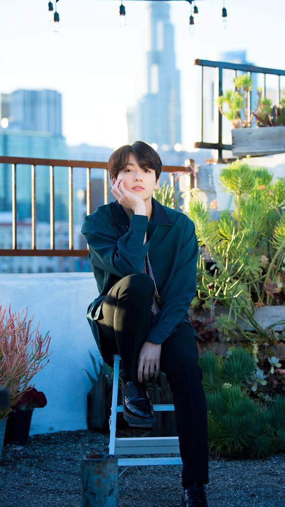

BTS,also known as Bangtan boys,Behind The scene,Bangtan Sonyeodan ,meaning bulletproof boy scouts, is a South Korean boy-band consisting of seven members.
The band BTS which was named by Time magazine as one of the 25 most influential people on the internet, is taking the world by storm, one follower at a time.
The seven-member band was formed through auditions by Bit Hit Entertainment in 2010 and 2011, and finalized in 2012.While the more successful idols are typically from one of the "big 3" entertainment companies, namely SM, YG and JYP Entertainment. BTS comes from the smaller Big Hit Entertainment, founded by producer and song-writer Bang Sihyuk or also known as "Bang PD" to ARMY and the band. The members:RM,SUGA,J-HOPE,V,JIN,JIMIN,JUNGKOOK, debuted in the year 2013 under BIG HIT ENTERTAINMENT.
Their lyrics are often focused on personal and social commentary, touch on the themes of mental health, troubles of school-age youth, loss, the journey towards loving oneself, and individualism.
Their work features references to literature and psychological concepts and includes an alternative universe storyline.
Members
Kim Nam-joon
Name
Kim Nam-Joon a.k.a.(Stage Name) RM/Real me/Rap monster
Birth
September 12, 1994 (age 26)
Dongjak-gu, Seoul, South Korea
Occupation
Rapper
Songwriter
Record producer
RM is the fourth oldest member of BTS and he is the leader of the band.He played a big part in helping Big Hit form the group that fans get to enjoy today.
He’s known for his rapping — he’s collaborated with artists like Wale and even was the first of the group to release his own rap mixtape — and is also the only member of BTS who speaks English, which he taught himself by watching all the seasons of Friends. In September, he delivered an English-language speech to the U.N. General Assembly in New York City supporting youth empowerment initiatives. “No matter who you are or where you’re from, your skin color, your gender identity, speak yourself,” RM said in the speech.
Kim Seok-jin
Name
Kim Seok-jin a.k.a.(Stage Name) Jin
Birth
December 4, 1992 (age 27)
Gwacheon, Gyeonggi-do, South Korea
Occupation
Singer(Vocals)
Songwriter
After stepping out of a limo at the Billboard Music Awards in 2017, a candid snapshot of Jin caught the internet’s attention.Jin is the oldest BTS member, although he doesn’t often act like it. He’s known for his dad jokes, describing himself as “Worldwide handsome”.Jin was originally studying acting and was infamously spotted on the streets by a Big Hit Entertainment staff member.
Kim Tae-hyung
Name
Kim Tae-hyung a.k.a.(Stage Name) V
Birth
December 30, 1995 (age 24)
Seo District, Daegu, South Korea
Occupation
Singer(Vocals)
Songwriter
Actor
Record producer
V, also known as Taehyung, Tae, or TaeTae was the last member of BTS to be revealed. He actually didn’t even mean to audition for Big Hit but had joined a friend for moral support and was convinced by a staff member to try out as well.V is the R&B crooner of the bunch, known for his smooth vocals that pop on some of the lower-tempo songs from the band. At shows, his standout moment comes when he sings and dances alongside a life-sized puppet of sorts in an emotive, avant-garde duet to his solo song “Singularity.” A songwriter and producer as well, he has also dabbled in acting, and currently has an interest in photography, he told TIME.
Min Yoon-gi
Name
Min Yoon-gi a.k.a.(Stage Name) Suga/August D
Birth
March 9, 1993 (age 27)
Daegu, South Korea
Occupation
Rapper
Songwriter
Record producer
Suga is the second oldest BTS member and can often be found taking care of things for the other members.Starting as an underground rapper as a teen with the stage name of Gloss, Suga got his current moniker from early years spent playing basketball. Suga is known for his rapid-fire rhymes. He’s also happy to be vocal about everything from mental health to politics, especially on his 2016 mixtape Agust D. He also is a producer, having contributed to award-winning songs on other artists’ projects as well of many of BTS’s own tracks.
Jung Ho-seok
Name
Jung Ho-seok a.k.a.(Stage Name) J-Hope
Birth
February 18, 1994 (age 26)
Gwangju, South Korea
Occupation
Rapper
Singer
Dancer
Songwriter
Record producer
The third member to be tapped to join BTS after RM and Suga, J-Hope — stylized as j-hope — was first known for his dancing; he was part of an underground dance crew in his home province of Gwangju. But since becoming a part of the boy band, J-Hope expanded his skill set to include rapping and songwriting, with credits across the BTS discography. He also released his own mixtape in March, Hope World, which charted independently on the Billboard 200 and shared his signature message of optimism and peace. He’s vocal about his love of fashion, too, telling TIME he loves to shop when he visits new cities.
Park Ji-min
Name
Park Ji-min a.k.a.(Stage Name)Jimin
Birth
October 13, 1995 (age 25)
Geumjeong District, Busan, South Korea
Occupation
Singer(Vocals)
Dancer
Songwriter
Jimin had the shortest amount of time as a trainee before BTS debuted and almost didn’t make the cut. Although he’s a formally trained dancer, he had no experience with singing and had to continue to train hard over the years on his vocals. These days, he seems a lot more satisfied with his skills and has no problem hitting all the right notes live.Discovered by Big Hit Entertainment during high school, Jimin is known for his sharp dance moves first and foremost; when he was younger, he attended an arts school alongside V, where he focused on modern dance. At shows, he performs the solo “Serendipity”.
Jeon Jung-kook

Name
Jeon Jung-kook a.k.a.(Stage Name)JK/Jungkook
Birth
September 1, 1997 (age 23)
Busan, South Korea
Occupation
Singer(Vocals)
MV producer
Songwriter
As the youngest member of the group, Jung Kook fills a special role in K-pop groups called the “Maknae,” referring to his youth — but in BTS he’s been deemed the “Golden Maknae,”.Along with his vocal and dancing skills, Jungkook is also quite athletic and artistic.
Initially, Jungkook left his hometown at a very young age to take part in a talent show for kids and was soon scouted by several entertainment agencies. Like previously mentioned, he ended up signing on with Big Hit after being impressed by RM.He was also the only trainee that was sent to America for dance training prior to their debut. By the time the group did debut, he was just 15 years old. Since he left home at such a young age, Jungkook often says that the other members basically raised him and had a huge impact on who he is today.